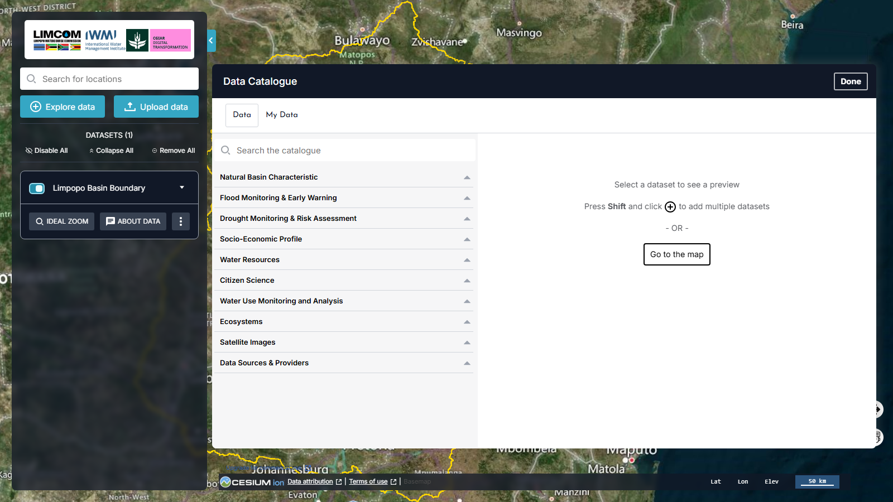

Data Catalogue¶
Watch: quick tour¶
A one-minute walkthrough of finding, previewing and adding data. Narration uses a synthetic voice; turn on captions with the CC button.
Click Explore data in the workbench (or Explore map data on the welcome panel) to open the Data Catalogue. In v2 this is a two-pane panel: the category tree on the left, and a dataset preview on the right.


At the top of the panel are two tabs — Data (the curated catalogue) and My Data (your own files, see My Data) — a Search the catalogue box, and a Done button that returns you to the map.
The eleven categories¶
v2 expands the catalogue from five thematic categories to eleven. Five are new since the 2024 release (marked New):
| Category | Contents |
|---|---|
| Natural Basin Characteristic | Physiography, land cover and land use, 3D point clouds, climate |
| Flood Monitoring & Early Warning | New — flood monitoring and early-warning layers |
| Drought Monitoring & Risk Assessment | New — drought monitoring and risk layers |
| Socio-Economic Profile | Population and demographic data |
| Water Resources | Surface water sources and infrastructure |
| Citizen Science | New — community-contributed observations (e.g. miniSASS, FishTRAC) |
| Water Use Monitoring and Analysis | New — water accounting and use monitoring |
| Ecosystems | E-flow regions, monitoring, alerts and warnings |
| Satellite Images | GeoMAD (Sentinel-2), Water Observations from Space |
| Data Sources & Providers | New — provenance and provider information for the catalogue |
See Dataset Themes for a walkthrough of what each category contains.
Searching the catalogue¶
Use Search the catalogue to find a dataset by name across all categories — faster than walking the tree.
Previewing and adding data¶
Click a category to expand it, then select a dataset. Its preview appears in the right-hand pane with a description and an add control (the + icon). Typical preview information includes:
- Dataset description — what the data is and why it matters.
- Add to the map — draws the dataset on the globe (the + icon; hold Shift and click + to add several datasets at once).
- Service contact — who to contact about the dataset.
- GetCapabilities URL — for integrating the dataset into other GIS software.
- DOI and data source — citation identifier and primary provider.
Add several at once
The catalogue prompts "Press Shift and click + to add multiple datasets." Use Go to the map or Done when you have finished selecting.
Once added, a dataset appears in the Workbench, where you can toggle it, change its opacity, restyle it, chart it and compare it.
Feature information¶
Clicking a feature on the map opens its Feature Information — the attributes behind that point, with options to download the underlying table (CSV or JSON) and to show the raw data. For datasets with a temporal dimension, a chart and a timeline let you explore change over a chosen date range.